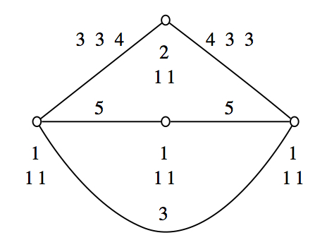

In this chapter we provide some simple examples of the use of FinInG.
The following example shows how to create some subspaces of a projective space, test their incidence, and determine their span and intersection. Projective spaces are considered as incidence geometries too. Incidence, to be tested with IsIncident or equivalently \*, is symmetrized set-theoretic containment, the latter which can be tested through the operation in.
gap> pg := PG(3,8); ProjectiveSpace(3, 8) gap> vec := [0,1,0,1]*Z(8)^0; [ 0*Z(2), Z(2)^0, 0*Z(2), Z(2)^0 ] gap> point := VectorSpaceToElement(pg,vec); <a point in ProjectiveSpace(3, 8)> gap> mat := [[0,0,1,1],[0,1,0,0]]*Z(8)^0; [ [ 0*Z(2), 0*Z(2), Z(2)^0, Z(2)^0 ], [ 0*Z(2), Z(2)^0, 0*Z(2), 0*Z(2) ] ] gap> line := VectorSpaceToElement(pg,mat); <a line in ProjectiveSpace(3, 8)> gap> mat2 := [[1,0,0,1],[1,0,1,0],[1,1,0,0]]*Z(8)^0; [ [ Z(2)^0, 0*Z(2), 0*Z(2), Z(2)^0 ], [ Z(2)^0, 0*Z(2), Z(2)^0, 0*Z(2) ], [ Z(2)^0, Z(2)^0, 0*Z(2), 0*Z(2) ] ] gap> plane := VectorSpaceToElement(pg,mat2); <a plane in ProjectiveSpace(3, 8)> gap> IsIncident(point,line); false gap> IsIncident(line,point); false gap> point * line; false gap> line * point > point in line; Syntax error: ; expected point in line; ^ gap> line in point; false gap> IsIncident(point,plane); true gap> IsIncident(line,plane); false gap> line in plane; false gap> plane2 := Span(point,line); <a plane in ProjectiveSpace(3, 8)> gap> Meet(plane,plane2); <a line in ProjectiveSpace(3, 8)> gap> mat3 := [[1,0,0,0],[0,0,0,1]]*Z(8)^0; [ [ Z(2)^0, 0*Z(2), 0*Z(2), 0*Z(2) ], [ 0*Z(2), 0*Z(2), 0*Z(2), Z(2)^0 ] ] gap> line2 := VectorSpaceToElement(pg,mat3); <a line in ProjectiveSpace(3, 8)> gap> Meet(line,line2); < empty subspace > gap> Span(plane,plane2); ProjectiveSpace(3, 8)
FinInG provides classical polar spaces. Subspaces can be constructed the same way as subspaces of projective spaces. Upon construction, it is checked whether the given vector space does determine a subspace of the polar space. Subspaces of polar spaces are also subspaces of the ambient projective space. Operations like Span and Meet are naturally applicable. However, the span of two subspaces might not be a subspace of the polar space anymore, and if the two subspaces belong to two different polar spaces in the same ambient projective space, it cannot be determined in which polar space the span should be constructed. Therefore the result of Span of two subspaces of a polar space is a subspace of the ambient projective space. It can be checked whether the result belongs to a polar space using in. This illustrates very well a general philosophy: a subspace of a polar space, and more generally, an element of any incidence structure is always aware of its ambient geometry. This example also illustrates how to create an element that belongs to the polar space from the subspace of the ambient projective geometry by using ElementToElement. Finally note the behaviour of = applied on the two subspaces. Clearly, a subspace of a polar space is really also a subspace of the ambient projective space.
gap> ps := EllipticQuadric(5,7); Q-(5, 7) gap> vec := [1,0,0,0,0,0]*Z(7)^0; [ Z(7)^0, 0*Z(7), 0*Z(7), 0*Z(7), 0*Z(7), 0*Z(7) ] gap> point := VectorSpaceToElement(ps,vec); Error, <v> does not generate an element of <geom> called from <function "unknown">( <arguments> ) called from read-eval loop at line 10 of *stdin* you can 'quit;' to quit to outer loop, or you can 'return;' to continue brk> quit; gap> EquationForPolarSpace(ps); x_1^2+x_2^2+x_3*x_4+x_5*x_6 gap> vec := [0,0,1,0,0,0]*Z(7)^0; [ 0*Z(7), 0*Z(7), Z(7)^0, 0*Z(7), 0*Z(7), 0*Z(7) ] gap> point := VectorSpaceToElement(ps,vec); <a point in Q-(5, 7)> gap> vec2 := [0,0,0,1,0,0]*Z(7)^0; [ 0*Z(7), 0*Z(7), 0*Z(7), Z(7)^0, 0*Z(7), 0*Z(7) ] gap> point2 := VectorSpaceToElement(ps,vec2); <a point in Q-(5, 7)> gap> line := Span(point,point2); <a line in ProjectiveSpace(5, 7)> gap> mat := [[0,0,1,0,0,0],[0,0,0,0,1,0]]*Z(7)^0; [ [ 0*Z(7), 0*Z(7), Z(7)^0, 0*Z(7), 0*Z(7), 0*Z(7) ], [ 0*Z(7), 0*Z(7), 0*Z(7), 0*Z(7), Z(7)^0, 0*Z(7) ] ] gap> line2 := VectorSpaceToElement(ps,mat); <a line in Q-(5, 7)> gap> meet := Meet(line,line2); <a point in ProjectiveSpace(5, 7)> gap> meet in ps; true gap> point3 := ElementToElement(ps,meet); <a point in Q-(5, 7)>
Subspaces of projective spaces and polar spaces (and in general, elements of incidence structures), are determined by a mathematical object, called in FinInG the underlying object. The operation UnderlyingObject simply returns this underlying object. For elements determined by vectors or sub vector spaces, the underlying objects are a vector or a matrix. To represent these objects and to do very efficient orbit calculations under groups, we use the cvec. This can be noted when applying UnderlyingObject. The operation Unpack simply converts the cvec objects into GAP vectors and matrices. The example also illustrates how the underlying object of an element of an affine spaces looks like.
gap> pg := PG(3,169); ProjectiveSpace(3, 169) gap> p := Random(Points(pg)); <a point in ProjectiveSpace(3, 169)> gap> UnderlyingObject(p); <cvec over GF(13,2) of length 4> gap> Unpack(last); [ Z(13)^0, Z(13^2)^49, Z(13^2)^31, Z(13^2)^143 ] gap> l := Random(Lines(pg)); <a line in ProjectiveSpace(3, 169)> gap> UnderlyingObject(l); <cmat 2x4 over GF(13,2)> gap> Unpack(last); [ [ Z(13)^0, 0*Z(13), 0*Z(13), Z(13^2)^96 ], [ 0*Z(13), Z(13)^0, Z(13^2)^113, Z(13^2)^99 ] ] gap> quadric := EllipticQuadric(5,2); Q-(5, 2) gap> line := Random(Lines(quadric)); <a line in Q-(5, 2)> gap> UnderlyingObject(line); <cmat 2x6 over GF(2,1)> gap> Unpack(last); [ [ 0*Z(2), 0*Z(2), Z(2)^0, 0*Z(2), 0*Z(2), Z(2)^0 ], [ 0*Z(2), 0*Z(2), 0*Z(2), Z(2)^0, Z(2)^0, 0*Z(2) ] ] gap> ag := AG(4,3); AG(4, 3) gap> plane := Random(Planes(ag)); <a plane in AG(4, 3)> gap> UnderlyingObject(plane); [ <cvec over GF(3,1) of length 4>, <cmat 2x4 over GF(3,1)> ]
FinInG provides the classical polar spaces as the geometries of which the subspaces are represented by the totally isotropic (resp. totally singular) vector subspaces with relation to a chosen sesquilinear (resp. quadratic form). The user may choose any non-degenerate (resp. non-singular) form to construct the polar space. The usage of the forms makes FinInG dependent on the package forms. Shortcuts to polar spaces in standard representation are included. Detailed information can be found in Section 7.2.
gap> ps := HermitianPolarSpace(4,9); H(4, 3^2) gap> EquationForPolarSpace(ps); x_1^4+x_2^4+x_3^4+x_4^4+x_5^4 gap> ps := HyperbolicQuadric(5,7); Q+(5, 7) gap> EquationForPolarSpace(ps); x_1*x_2+x_3*x_4+x_5*x_6 gap> ps := SymplecticSpace(3,3); W(3, 3) gap> EquationForPolarSpace(ps); x1*y2-x2*y1+x3*y4-x4*y3 gap> mat := IdentityMat(4,GF(11)); [ [ Z(11)^0, 0*Z(11), 0*Z(11), 0*Z(11) ], [ 0*Z(11), Z(11)^0, 0*Z(11), 0*Z(11) ], [ 0*Z(11), 0*Z(11), Z(11)^0, 0*Z(11) ], [ 0*Z(11), 0*Z(11), 0*Z(11), Z(11)^0 ] ] gap> form := BilinearFormByMatrix(mat,GF(11)); < bilinear form > gap> ps := PolarSpace(form); <polar space in ProjectiveSpace(3,GF(11)): x_1^2+x_2^2+x_3^2+x_4^2=0 > gap> Rank(ps); 2 gap> ps; Q+(3, 11): x_1^2+x_2^2+x_3^2+x_4^2=0
In principle, the full group of collineations of almost any incidence structure can be computed in FinInG. Mathematically, this is almost obvious for projective spaces and affine spaces. For classical polar spaces, the particular forms plays a role. The coordinate change capabilities of the package forms, together with the standard theory (see [KL90]), ensure that the full collineation group of a classical polar space can be relatively easily obtained. The computation of the full collineation group of particular incidence structures, such as generalised polygons, may rely on the computation of the automorphism group of an underlying incidence graph, which is done by using nauty through the package GRAPE. Note that the elements of a projective collineation group are semilinear maps, they consist of a matrix together with a field automorphism.
gap> pg := PG(3,4); ProjectiveSpace(3, 4) gap> coll := CollineationGroup(pg); The FinInG collineation group PGammaL(4,4) gap> gens := GeneratorsOfGroup(coll); [ < a collineation: <cmat 4x4 over GF(2,2)>, F^0>, < a collineation: <cmat 4x4 over GF(2,2)>, F^0>, < a collineation: <cmat 4x4 over GF(2,2)>, F^2> ] gap> UnderlyingMatrix(gens[2]); <cmat 4x4 over GF(2,2)> gap> Unpack(last); [ [ Z(2)^0, 0*Z(2), 0*Z(2), Z(2)^0 ], [ Z(2)^0, 0*Z(2), 0*Z(2), 0*Z(2) ], [ 0*Z(2), Z(2)^0, 0*Z(2), 0*Z(2) ], [ 0*Z(2), 0*Z(2), Z(2)^0, 0*Z(2) ] ] gap> as := AffineSpace(3,4); AG(3, 4) gap> coll := CollineationGroup(as); AGammaL(3,4) gap> GeneratorsOfGroup(coll); [ < a collineation: <cmat 4x4 over GF(2,2)>, F^0>, < a collineation: <cmat 4x4 over GF(2,2)>, F^0>, < a collineation: <cmat 4x4 over GF(2,2)>, F^0>, < a collineation: <cmat 4x4 over GF(2,2)>, F^2> ] gap> gp := SplitCayleyHexagon(3); H(3) gap> coll:= CollineationGroup(gp); #I for Split Cayley Hexagon #I Computing nice monomorphism... #I Found permutation domain... G_2(3) gap> GeneratorsOfGroup(coll); [ < a collineation: <cmat 7x7 over GF(3,1)>, F^0>, < a collineation: <cmat 7x7 over GF(3,1)>, F^0>, < a collineation: <cmat 7x7 over GF(3,1)>, F^0>, < a collineation: <cmat 7x7 over GF(3,1)>, F^0>, < a collineation: <cmat 7x7 over GF(3,1)>, F^0> ] gap> egq := EGQByqClan(LinearqClan(3)); #I Computed Kantor family. Now computing EGQ... <EGQ of order [ 9, 3 ] and basepoint 0> gap> coll := CollineationGroup(egq); #I Computing incidence graph of generalised polygon... #I Using elation of the collineation group... <permutation group of size 26127360 with 6 generators>
The examples here are meant to give a flavour of how to explore geometrical objects from different point of views.
In this example we consider the Tits ovoid in \(PG(3,8)\). We explicitly check the intersection number of the Tits-ovoid with planes of the projective space, and compute its stabiliser group inside the homography group of \(PG(3,8)\). The use of ;; after a command suppresses its output, which is particularly interesting if the output is a long list. The operation Collected is self-explanatory, and a very useful GAP command. The computed stabiliser is the Suzuki group \(Sz(8)\), a finite simple group.
gap> q := 8; 8 gap> pg := PG(3,q); ProjectiveSpace(3, 8) gap> f := GF(q); GF(2^3) gap> vecs := Union(List(f,x->List(f,y->[One(f),x*y+x^6+y^4,x,y])));; gap> Add(vecs,[0,1,0,0]*Z(q)^0); gap> ovoid := List(vecs,x->VectorSpaceToElement(pg,x));; gap> numbers := List(Planes(pg),x->Number(ovoid,y->y in x)); [ 9, 9, 9, 9, 9, 9, 9, 9, 9, 9, 9, 9, 9, 9, 9, 9, 9, 9, 9, 9, 9, 9, 9, 9, 9, 9, 9, 9, 9, 9, 9, 9, 9, 9, 9, 9, 9, 9, 9, 9, 9, 9, 9, 9, 9, 9, 9, 9, 9, 9, 9, 9, 9, 9, 9, 9, 9, 9, 9, 9, 9, 9, 9, 9, 9, 9, 9, 9, 9, 9, 9, 9, 1, 1, 9, 9, 9, 9, 9, 9, 9, 9, 9, 1, 9, 9, 1, 9, 9, 9, 9, 9, 1, 1, 9, 9, 9, 9, 9, 9, 9, 9, 9, 9, 9, 9, 1, 9, 9, 9, 9, 1, 9, 9, 9, 9, 9, 9, 9, 9, 9, 9, 9, 9, 9, 9, 9, 9, 9, 9, 9, 9, 9, 9, 9, 9, 9, 9, 9, 9, 9, 9, 9, 9, 9, 9, 9, 9, 9, 1, 9, 1, 9, 9, 9, 9, 9, 9, 9, 9, 9, 9, 9, 9, 9, 9, 9, 9, 1, 9, 9, 9, 9, 9, 1, 9, 9, 1, 9, 9, 1, 9, 9, 9, 9, 9, 1, 1, 9, 9, 9, 9, 9, 9, 9, 9, 9, 9, 9, 9, 9, 9, 9, 9, 9, 9, 9, 9, 1, 9, 9, 9, 1, 9, 9, 9, 9, 9, 1, 9, 9, 9, 1, 9, 9, 1, 9, 9, 9, 9, 9, 1, 9, 9, 9, 9, 9, 9, 9, 9, 9, 9, 9, 1, 9, 1, 9, 9, 9, 9, 9, 9, 9, 9, 9, 9, 9, 9, 9, 9, 9, 9, 9, 9, 9, 9, 9, 9, 9, 1, 1, 9, 9, 9, 9, 9, 9, 9, 9, 9, 9, 1, 9, 1, 9, 9, 9, 9, 9, 9, 9, 9, 9, 9, 9, 9, 9, 9, 9, 9, 9, 9, 9, 9, 1, 9, 1, 9, 9, 9, 9, 9, 9, 9, 9, 9, 1, 9, 9, 1, 9, 9, 9, 9, 9, 9, 9, 9, 9, 9, 9, 9, 9, 9, 9, 9, 9, 9, 9, 9, 9, 9, 9, 9, 1, 9, 9, 9, 9, 9, 9, 1, 9, 9, 1, 9, 9, 1, 9, 9, 9, 9, 9, 1, 1, 9, 9, 9, 9, 9, 9, 9, 9, 9, 9, 9, 9, 1, 9, 9, 9, 9, 1, 9, 9, 9, 9, 9, 9, 9, 9, 9, 9, 9, 9, 1, 9, 9, 9, 1, 9, 1, 1, 9, 9, 9, 9, 9, 9, 9, 9, 9, 9, 9, 9, 9, 9, 9, 9, 9, 1, 9, 1, 9, 9, 9, 9, 9, 9, 9, 9, 9, 9, 9, 9, 9, 9, 9, 9, 9, 1, 9, 9, 9, 9, 1, 9, 9, 9, 9, 9, 9, 9, 9, 9, 9, 9, 9, 1, 9, 1, 9, 9, 9, 9, 9, 9, 9, 9, 9, 9, 9, 9, 9, 9, 9, 9, 9, 9, 9, 1, 9, 9, 1, 9, 9, 9, 9, 9, 1, 9, 9, 9, 1, 9, 9, 9, 9, 9, 9, 9, 9, 1, 1, 9, 9, 9, 9, 9, 9, 9, 9, 9, 9, 9, 9, 9, 9, 9, 9, 9, 1, 9, 9, 9, 9, 9, 9, 9, 9, 9, 1, 9, 9, 9, 9, 9, 9, 9, 9, 9, 1, 9, 9, 9, 9, 9, 9, 9, 9, 9, 1, 9, 9, 1, 9, 9, 9, 9, 9, 9, 9, 9, 9, 1, 9, 9, 9, 9, 9, 9, 9, 9, 9, 1, 9, 1, 9, 9, 9, 9, 9, 9, 9, 1 ] gap> Collected(numbers); [ [ 1, 65 ], [ 9, 520 ] ] gap> group := HomographyGroup(pg); The FinInG projectivity group PGL(4,8) gap> stab := FiningSetwiseStabiliser(group,ovoid); #I Computing adjusted stabilizer chain... <projective collineation group with 5 generators> gap> time; 55290 gap> IsSimple(stab); true gap> Order(stab); 29120
Here we see how the lines of a projective plane PG(2,q2 ) meet a hermitian curve. It is well known that every line meets in either 1 or \(q+1\) points. Note that the last comment takes a while to complete.
gap> h:=HermitianPolarSpace(2, 7^2); H(2, 7^2) gap> pg := AmbientSpace( h ); ProjectiveSpace(2, 49) gap> lines := Lines( pg ); <lines of ProjectiveSpace(2, 49)> gap> curve := AsList( Points( h ) );; gap> Size(curve); 344 gap> Collected( List(lines, t -> Number(curve, c-> c in t))); [ [ 1, 344 ], [ 8, 2107 ] ] gap> time; 26412
In this example, we construct the unique ovoid of the parabolic quadric \(Q(6,3)\), first discovered by Patterson, but for which was given a nice construction by E. E. Shult. We begin with the ``sums of squares'' quadratic form over \(GF(3)\) and the associated polar space.
gap> id := IdentityMat(7, GF(3));; gap> form := QuadraticFormByMatrix(id, GF(3)); < quadratic form > gap> ps := PolarSpace( form ); <polar space in ProjectiveSpace( 6,GF(3)): x_1^2+x_2^2+x_3^2+x_4^2+x_5^2+x_6^2+x_7^2=0 >
The construction of the ovoid (a la Shult):
gap> psl32 := PSL(3,2); Group([ (4,6)(5,7), (1,2,4)(3,6,5) ]) gap> reps:=[[1,1,1,0,0,0,0], [-1,1,1,0,0,0,0], > [1,-1,1,0,0,0,0], [1,1,-1,0,0,0,0]]*Z(3)^0; [ [ Z(3)^0, Z(3)^0, Z(3)^0, 0*Z(3), 0*Z(3), 0*Z(3), 0*Z(3) ], [ Z(3), Z(3)^0, Z(3)^0, 0*Z(3), 0*Z(3), 0*Z(3), 0*Z(3) ], [ Z(3)^0, Z(3), Z(3)^0, 0*Z(3), 0*Z(3), 0*Z(3), 0*Z(3) ], [ Z(3)^0, Z(3)^0, Z(3), 0*Z(3), 0*Z(3), 0*Z(3), 0*Z(3) ] ] gap> ovoid := Union( List(reps, x-> Orbit(psl32, x, Permuted)) );; gap> ovoid := List(ovoid, x -> VectorSpaceToElement(ps, x));;
We check that this is indeed an ovoid. The observant reader will notice #I Computing collineation group of canonical polar space... which is caused by the command AsList applied to the collection of elements planes. The use of AsList invokes the computation of all elements in planes as an orbit under the collineation group of the ambient polar space. The reader is invited to redo, in a new GAP session, the same example omitting the AsList command, just defining planes := Planes(ps);;. The result will be te same, but the computation of all elements will now be done using an enumerator, and will be slower.
gap> planes := AsList(Planes( ps ));; #I Computing collineation group of canonical polar space... gap> ForAll(planes, p -> Number(ovoid, x -> x * p) = 1); true
The stabiliser is interesting since it yields the embedding of \(Sp(6,2)\) in \(PO(7,3)\). To efficiently compute the set-wise stabiliser, we refer to the induced permutation representation.
gap> g := IsometryGroup( ps ); #I Computing collineation group of canonical polar space... <projective collineation group of size 9170703360 with 2 generators> gap> stabovoid := FiningSetwiseStabiliser(g, ovoid); #I Computing adjusted stabilizer chain... <projective collineation group with 13 generators> gap> DisplayCompositionSeries(stabovoid); G (size 1451520) | B(3,2) = O(7,2) ~ C(3,2) = S(6,2) 1 (size 1) gap> OrbitLengths(stabovoid, ovoid); [ 28 ] gap> IsTransitive(stabovoid, ovoid); true
In this example, we consider a hyperoval of the projective plane \(PG(2,4)\), that is, six points no three collinear. We will construct such a hyperoval by some basic explorations into particular properties of the projective plane \(PG(2,4)\). The projective plane is initialised, its points are computed and listed; then a standard frame is constructed, of which we may assume that it is a subset of the hyperoval. Finally, the stabiliser group of the hyperoval is computed, and it is checked that this group is isomorphic with the symmetric group on six elements.
gap> pg := ProjectiveSpace(2,4); ProjectiveSpace(2, 4) gap> points := Points(pg); <points of ProjectiveSpace(2, 4)> gap> pointslist := AsList(points); [ <a point in ProjectiveSpace(2, 4)>, <a point in ProjectiveSpace(2, 4)>, <a point in ProjectiveSpace(2, 4)>, <a point in ProjectiveSpace(2, 4)>, <a point in ProjectiveSpace(2, 4)>, <a point in ProjectiveSpace(2, 4)>, <a point in ProjectiveSpace(2, 4)>, <a point in ProjectiveSpace(2, 4)>, <a point in ProjectiveSpace(2, 4)>, <a point in ProjectiveSpace(2, 4)>, <a point in ProjectiveSpace(2, 4)>, <a point in ProjectiveSpace(2, 4)>, <a point in ProjectiveSpace(2, 4)>, <a point in ProjectiveSpace(2, 4)>, <a point in ProjectiveSpace(2, 4)>, <a point in ProjectiveSpace(2, 4)>, <a point in ProjectiveSpace(2, 4)>, <a point in ProjectiveSpace(2, 4)>, <a point in ProjectiveSpace(2, 4)>, <a point in ProjectiveSpace(2, 4)>, <a point in ProjectiveSpace(2, 4)> ] gap> Display(pointslist[1]); . . 1
Now we may assume that our hyperoval contains the fundamental frame.
gap> frame := [[1,0,0],[0,1,0],[0,0,1],[1,1,1]]*Z(2)^0; [ [ Z(2)^0, 0*Z(2), 0*Z(2) ], [ 0*Z(2), Z(2)^0, 0*Z(2) ], [ 0*Z(2), 0*Z(2), Z(2)^0 ], [ Z(2)^0, Z(2)^0, Z(2)^0 ] ] gap> frame := List(frame,x -> VectorSpaceToElement(pg,x)); [ <a point in ProjectiveSpace(2, 4)>, <a point in ProjectiveSpace(2, 4)>, <a point in ProjectiveSpace(2, 4)>, <a point in ProjectiveSpace(2, 4)> ]
Alternatively, we could use:
gap> frame := StandardFrame( pg ); [ <a point in ProjectiveSpace(2, 4)>, <a point in ProjectiveSpace(2, 4)>, <a point in ProjectiveSpace(2, 4)>, <a point in ProjectiveSpace(2, 4)> ]
There are six secant lines to this frame (``four choose two''). So we put together these secant lines from the pairs of points of this frame.
gap> pairs := Combinations(frame,2); [ [ <a point in ProjectiveSpace(2, 4)>, <a point in ProjectiveSpace(2, 4)> ], [ <a point in ProjectiveSpace(2, 4)>, <a point in ProjectiveSpace(2, 4)> ], [ <a point in ProjectiveSpace(2, 4)>, <a point in ProjectiveSpace(2, 4)> ], [ <a point in ProjectiveSpace(2, 4)>, <a point in ProjectiveSpace(2, 4)> ], [ <a point in ProjectiveSpace(2, 4)>, <a point in ProjectiveSpace(2, 4)> ], [ <a point in ProjectiveSpace(2, 4)>, <a point in ProjectiveSpace(2, 4)> ] ] gap> secants := List(pairs,p -> Span(p[1],p[2])); [ <a line in ProjectiveSpace(2, 4)>, <a line in ProjectiveSpace(2, 4)>, <a line in ProjectiveSpace(2, 4)>, <a line in ProjectiveSpace(2, 4)>, <a line in ProjectiveSpace(2, 4)>, <a line in ProjectiveSpace(2, 4)> ]
By a counting argument, it is known that the frame of \(PG(2,4)\) completes uniquely to a hyperoval.
gap> leftover := Filtered(pointslist,t->not ForAny(secants,s->t in s)); [ <a point in ProjectiveSpace(2, 4)>, <a point in ProjectiveSpace(2, 4)> ] gap> hyperoval := Union(frame,leftover); [ <a point in ProjectiveSpace(2, 4)>, <a point in ProjectiveSpace(2, 4)>, <a point in ProjectiveSpace(2, 4)>, <a point in ProjectiveSpace(2, 4)>, <a point in ProjectiveSpace(2, 4)>, <a point in ProjectiveSpace(2, 4)> ]
This hyperoval has the symmetric group on six symbols as its stabiliser, which can easily be calculated:
gap> g := CollineationGroup(pg); The FinInG collineation group PGammaL(3,4) gap> stab := Stabilizer(g,Set(hyperoval),OnSets); <projective collineation group of size 720> gap> StructureDescription(stab); "S6"
A geometry morphism in FinInG is a map between (a subset of) the elements of one geometry to (a subset of) the elements of a second geometry, preserving the incidence. Geometry morphisms are not necessarily type preserving. This section is meant to illustrate, in a non exhaustive way the basis philisophy behind geometry morphisms in FinInG.
We've seen already that a polar space can be constructed from any non-degenerate sesquilinear or non-singular quadratic form. An isomorphism between polar spaces of the same type, can easily be obtained. This example illustrates IsomorphismPolarSpaces, which is in its basic use self-explanatory, and the use of the obtained map to compute images and pre-images of elements.
gap> mat1 := IdentityMat(4,GF(16)); [ [ Z(2)^0, 0*Z(2), 0*Z(2), 0*Z(2) ], [ 0*Z(2), Z(2)^0, 0*Z(2), 0*Z(2) ], [ 0*Z(2), 0*Z(2), Z(2)^0, 0*Z(2) ], [ 0*Z(2), 0*Z(2), 0*Z(2), Z(2)^0 ] ] gap> form1 := HermitianFormByMatrix(mat1,GF(16)); < hermitian form > gap> ps1 := PolarSpace(form1); <polar space in ProjectiveSpace(3,GF(2^4)): x_1^5+x_2^5+x_3^5+x_4^5=0 > gap> mat2 := [[0,1,0,0],[1,0,0,0],[0,0,0,1],[0,0,1,0]]*Z(16)^0; [ [ 0*Z(2), Z(2)^0, 0*Z(2), 0*Z(2) ], [ Z(2)^0, 0*Z(2), 0*Z(2), 0*Z(2) ], [ 0*Z(2), 0*Z(2), 0*Z(2), Z(2)^0 ], [ 0*Z(2), 0*Z(2), Z(2)^0, 0*Z(2) ] ] gap> form2 := HermitianFormByMatrix(mat2,GF(16)); < hermitian form > gap> ps2 := PolarSpace(form2); <polar space in ProjectiveSpace( 3,GF(2^4)): x_1^4*x_2+x_1*x_2^4+x_3^4*x_4+x_3*x_4^4=0 > gap> map := IsomorphismPolarSpaces(ps1,ps2); #I No intertwiner computed. One of the polar spaces must have a collineation group computed <geometry morphism from <Elements of H(3, 4^2): x_1^5+x_2^5+x_3^5+x_4^5=0> to <Elements of H(3, 4^2): x_1^4*x_2+x_1*x_2^4+x_3^4*x_4+x_3*x_4^4=0>> gap> p := Random(Points(ps1)); <a point in H(3, 4^2): x_1^5+x_2^5+x_3^5+x_4^5=0> gap> p^map; <a point in H(3, 4^2): x_1^4*x_2+x_1*x_2^4+x_3^4*x_4+x_3*x_4^4=0> gap> l := Random(Lines(ps2)); <a line in H(3, 4^2): x_1^4*x_2+x_1*x_2^4+x_3^4*x_4+x_3*x_4^4=0> gap> PreImageElm(map,l); <a line in H(3, 4^2): x_1^5+x_2^5+x_3^5+x_4^5=0>
We reconsider the previous example. The observant reader might have noticed the message #I No intertwiner computed.... Given a geometry morphism \(f\) from \(S\) to \(S'\), an intertwiner φ is a map from the automorphism group of \(S\) to the automorphism group of \(S'\), such that for every element \(p\) of \(S\) and every automorphism \(g\) of \(S\), we have
\[f(pg)=f(p)φ(g).\]
gap> mat1 := IdentityMat(4,GF(16)); [ [ Z(2)^0, 0*Z(2), 0*Z(2), 0*Z(2) ], [ 0*Z(2), Z(2)^0, 0*Z(2), 0*Z(2) ], [ 0*Z(2), 0*Z(2), Z(2)^0, 0*Z(2) ], [ 0*Z(2), 0*Z(2), 0*Z(2), Z(2)^0 ] ] gap> form1 := HermitianFormByMatrix(mat1,GF(16)); < hermitian form > gap> ps1 := PolarSpace(form1); <polar space in ProjectiveSpace(3,GF(2^4)): x_1^5+x_2^5+x_3^5+x_4^5=0 > gap> mat2 := [[0,1,0,0],[1,0,0,0],[0,0,0,1],[0,0,1,0]]*Z(16)^0; [ [ 0*Z(2), Z(2)^0, 0*Z(2), 0*Z(2) ], [ Z(2)^0, 0*Z(2), 0*Z(2), 0*Z(2) ], [ 0*Z(2), 0*Z(2), 0*Z(2), Z(2)^0 ], [ 0*Z(2), 0*Z(2), Z(2)^0, 0*Z(2) ] ] gap> form2 := HermitianFormByMatrix(mat2,GF(16)); < hermitian form > gap> ps2 := PolarSpace(form2); <polar space in ProjectiveSpace( 3,GF(2^4)): x_1^4*x_2+x_1*x_2^4+x_3^4*x_4+x_3*x_4^4=0 > gap> CollineationGroup(ps1); #I Computing collineation group of canonical polar space... <projective collineation group of size 4073472000 with 3 generators> gap> map := IsomorphismPolarSpaces(ps1,ps2); <geometry morphism from <Elements of H(3, 4^2): x_1^5+x_2^5+x_3^5+x_4^5=0> to <Elements of H(3, 4^2): x_1^4*x_2+x_1*x_2^4+x_3^4*x_4+x_3*x_4^4=0>> gap> phi := Intertwiner(map); MappingByFunction( <projective collineation group of size 4073472000 with 3 generators>, <projective collineation group of size 4073472000 with 3 generators>, function( y ) ... end, function( x ) ... end ) gap> g := Random(CollineationGroup(ps1)); < a collineation: <cmat 4x4 over GF(2,4)>, F^4> gap> h := g^phi; < a collineation: <cmat 4x4 over GF(2,4)>, F^4> gap> h in CollineationGroup(ps2); #I Computing collineation group of canonical polar space... true gap> h := Random(CollineationGroup(ps2)); < a collineation: <cmat 4x4 over GF(2,4)>, F^2> gap> g := PreImageElm(phi,h); < a collineation: <cmat 4x4 over GF(2,4)>, F^2> gap> g in CollineationGroup(ps1); true
The Klein correspondence is well known. The user may define its own hyperbolic quadric as range for the geometry morphism in FinInG. Note that more is possible than illustrated in the elementary example, see Section 10.3.
gap> ps := HyperbolicQuadric(5,5); Q+(5, 5) gap> klein := KleinCorrespondence(ps); <geometry morphism from <lines of ProjectiveSpace(3, 5)> to <points of Q+(5, 5)>> gap> line1 := Random(Lines(PG(3,5))); <a line in ProjectiveSpace(3, 5)> gap> line2 := Random(Lines(PG(3,5))); <a line in ProjectiveSpace(3, 5)> gap> p := line1^klein; <a point in Q+(5, 5)> gap> q := line2^klein; <a point in Q+(5, 5)> gap> p in ps; true gap> q in ps; true gap> IsCollinear(ps,p,q); false gap> Meet(line1,line2); < empty subspace >
A projective space can be embedded as a subspace in a higher dimensional projective space. A comparable embedding is possible for polar spaces, clearly only when a given subspace intersects the polar space of higher rank in a polar space of the same type as the polar space to be embedded.
gap> pg2 := PG(2,5); ProjectiveSpace(2, 5) gap> pg3 := PG(3,5); ProjectiveSpace(3, 5) gap> hyp := VectorSpaceToElement(pg3,[[1,2,4,0],[0,3,2,0],[1,1,0,1]]*Z(5)^0); <a plane in ProjectiveSpace(3, 5)> gap> em := NaturalEmbeddingBySubspace( pg2, pg3, hyp ); <geometry morphism from <All elements of ProjectiveSpace(2, 5)> to <All elements of ProjectiveSpace(3, 5)>> gap> l := Random(Lines(pg2)); <a line in ProjectiveSpace(2, 5)> gap> l^em; <a line in ProjectiveSpace(3, 5)> gap> p := Random(Points(hyp)); <a point in ProjectiveSpace(3, 5)> gap> PreImageElm(em,p); <a point in ProjectiveSpace(2, 5)> gap> mat := [[0,0,0,1],[0,0,1,0],[0,-1,0,0],[-1,0,0,0]]*Z(3); [ [ 0*Z(3), 0*Z(3), 0*Z(3), Z(3) ], [ 0*Z(3), 0*Z(3), Z(3), 0*Z(3) ], [ 0*Z(3), Z(3)^0, 0*Z(3), 0*Z(3) ], [ Z(3)^0, 0*Z(3), 0*Z(3), 0*Z(3) ] ] gap> form := BilinearFormByMatrix(mat,GF(3)); < bilinear form > gap> w3 := PolarSpace(form); <polar space in ProjectiveSpace(3,GF(3)): -x1*y4-x2*y3+x3*y2+x4*y1=0 > gap> w5 := SymplecticSpace(5, 3); W(5, 3) gap> pg := AmbientSpace( w5 ); ProjectiveSpace(5, 3) gap> solid := VectorSpaceToElement(pg,[[1,0,0,0,0,0],[0,1,0,0,0,0], > [0,0,1,0,0,0],[0,0,0,1,0,0]]*Z(3)^0); <a solid in ProjectiveSpace(5, 3)> gap> TypeOfSubspace(w5,solid); "symplectic" gap> em := NaturalEmbeddingBySubspace( w3, w5, solid ); <geometry morphism from <Elements of <polar space in ProjectiveSpace( 3,GF(3)): -x1*y4-x2*y3+x3*y2+x4*y1=0 >> to <Elements of W(5, 3)>> gap> points := Points( w3 ); <points of W(3, 3): -x1*y4-x2*y3+x3*y2+x4*y1=0> gap> points2 := ImagesSet(em, AsSet(points));; #I Computing collineation group of canonical polar space... gap> ForAll(points2, x -> x in solid); true
A projective space can be embedded as a subgeometry in a projective space of the same dimension but over a field extension. A polar space, determined by a form \(f\) can be embedded in a polar space considered over a field extension by interpreting the form \(f\) over this field extension. This is an interesting tool to construct geometrical objects in projective and polar spaces.
gap> pgsub := PG(2,7); ProjectiveSpace(2, 7) gap> pg := PG(2,7^2); ProjectiveSpace(2, 49) gap> em := NaturalEmbeddingBySubfield(pgsub,pg); <geometry morphism from <All elements of ProjectiveSpace(2, 7)> to <All elements of ProjectiveSpace(2, 49)>> gap> baer := List(Points(pgsub),x->x^em);; gap> numbers := Collected(List(Lines(pg),x->Number(baer,y->y in x))); [ [ 1, 2394 ], [ 8, 57 ] ] gap> mat := [[0,0,0,1],[0,0,-1,0],[0,1,0,0],[-1,0,0,0]]*Z(5)^0; [ [ 0*Z(5), 0*Z(5), 0*Z(5), Z(5)^0 ], [ 0*Z(5), 0*Z(5), Z(5)^2, 0*Z(5) ], [ 0*Z(5), Z(5)^0, 0*Z(5), 0*Z(5) ], [ Z(5)^2, 0*Z(5), 0*Z(5), 0*Z(5) ] ] gap> form := BilinearFormByMatrix(mat,GF(5)); < bilinear form > gap> symplecticspace := PolarSpace(form); <polar space in ProjectiveSpace(3,GF(5)): x1*y4-x2*y3+x3*y2-x4*y1=0 > gap> hermitianspace := HermitianPolarSpace(3,25); H(3, 5^2) gap> em := NaturalEmbeddingBySubfield(symplecticspace,hermitianspace); #I No intertwiner computed. <geom1> must have a collineation group computed <geometry morphism from <Elements of <polar space in ProjectiveSpace( 3,GF(5)): x1*y4-x2*y3+x3*y2-x4*y1=0 >> to <Elements of H(3, 5^2)>> gap> l := Random(Lines(symplecticspace)); <a line in W(3, 5): x1*y4-x2*y3+x3*y2-x4*y1=0> gap> l^em; <a line in H(3, 5^2)>
Field reduction is a power full tool to embedd low dimensional projective (and polar spaces) over a field \(K\) in to high dimensional spaces over a subfield of \(K\). The mathematics behind field reduction is explained in sections 10.4-3 and 10.5-3. The examples here show the use of these embedings to construct a regular spread of a projective space and a so-called Hermitian spread of a hyperbolic quadric.
gap> pg1 := PG(1,3^2); ProjectiveSpace(1, 9) gap> pg2 := PG(3,3); ProjectiveSpace(3, 3) gap> em := NaturalEmbeddingByFieldReduction(pg1,pg2); <geometry morphism from <All elements of ProjectiveSpace(1, 9)> to <All elements of ProjectiveSpace(3, 3)>> gap> spread := List(Points(pg1),x->x^em); [ <a line in ProjectiveSpace(3, 3)>, <a line in ProjectiveSpace(3, 3)>, <a line in ProjectiveSpace(3, 3)>, <a line in ProjectiveSpace(3, 3)>, <a line in ProjectiveSpace(3, 3)>, <a line in ProjectiveSpace(3, 3)>, <a line in ProjectiveSpace(3, 3)>, <a line in ProjectiveSpace(3, 3)>, <a line in ProjectiveSpace(3, 3)>, <a line in ProjectiveSpace(3, 3)> ] gap> Union(List(spread,x->List(Points(x))))=Set(Points(pg2)); true gap> ps1 := HermitianPolarSpace(3,3^2); H(3, 3^2) gap> ps2 := HyperbolicQuadric(7,3); Q+(7, 3) gap> em := NaturalEmbeddingByFieldReduction(ps1,ps2); #I These polar spaces are suitable for field reduction <geometry morphism from <Elements of H(3, 3^2)> to <Elements of Q+(7, 3)>> gap> spread := List(Points(ps1),x->x^em);; gap> Union(List(spread,x->List(Points(x))))=Set(Points(ps2)); true
A spread of \(W(5,q)\) is a set of q3+1 planes which partition the points of \(W(5,q)\). Here we enumerate all spreads of \(W(5,3)\) which have a set-wise stabiliser of order a multiple of 13.
gap> w := SymplecticSpace(5, 3); W(5, 3) gap> g := IsometryGroup(w); PSp(6,3) gap> syl := SylowSubgroup(g, 13); <projective collineation group of size 13> gap> planes := Planes( w ); <planes of W(5, 3)> gap> points := Points( w ); <points of W(5, 3)> gap> orbs := Orbits(syl, planes , OnProjSubspaces);; gap> IsPartialSpread := x -> Number(points, p -> > ForAny(x, i-> p in i)) = Size(x)*13;; gap> partialspreads := Filtered(orbs, IsPartialSpread);; gap> Length(partialspreads); 8 gap> 13s := Filtered(partialspreads, i -> Size(i) = 13);; gap> Length(13s); 6 gap> 13s[1]; [ <a plane in W(5, 3)>, <a plane in W(5, 3)>, <a plane in W(5, 3)>, <a plane in W(5, 3)>, <a plane in W(5, 3)>, <a plane in W(5, 3)>, <a plane in W(5, 3)>, <a plane in W(5, 3)>, <a plane in W(5, 3)>, <a plane in W(5, 3)>, <a plane in W(5, 3)>, <a plane in W(5, 3)>, <a plane in W(5, 3)> ] gap> 26s := List(Combinations(13s,2), Union);; gap> two := Union(Filtered(partialspreads, i -> Size(i) = 1));; gap> good26s := Filtered(26s, x->IsPartialSpread(Union(x, two)));; gap> spreads := List(good26s, x->Union(x, two));; gap> Length(spreads); 5
A distance 6 spread of a split Cayley hexagon is a set of lines mutually at maximal distance in the incidence graph. It is well known that the lines of the hexagon contained in a hyperplane meeting the ambient polar space in an elliptic quadric, yield such a spread. This example also illustrates how an element of a geometry remembers its ambient geometry, and how ElementToElement can be used to embed an element in another geometry, see 3.8-1.
gap> gh := SplitCayleyHexagon(3); H(3) gap> q6 := AmbientPolarSpace(gh); Q(6, 3): -x_1*x_5-x_2*x_6-x_3*x_7+x_4^2=0 gap> hyp := First(Hyperplanes(PG(6,3)),x->TypeOfSubspace(q6,x)="elliptic"); <a proj. 5-space in ProjectiveSpace(6, 3)> gap> q5 := EllipticQuadric(5,3); Q-(5, 3) gap> lines := AsList(Lines(q5)); <closed orbit, 280 points> gap> em := NaturalEmbeddingBySubspace(q5,q6,hyp); <geometry morphism from <Elements of Q-(5, 3)> to <Elements of Q(6, 3): -x_1*x_5-x_2*x_6-x_3*x_7+x_4^2=0>> gap> spread := Filtered(lines,x->x^em in gh); [ <a line in Q-(5, 3)>, <a line in Q-(5, 3)>, <a line in Q-(5, 3)>, <a line in Q-(5, 3)>, <a line in Q-(5, 3)>, <a line in Q-(5, 3)>, <a line in Q-(5, 3)>, <a line in Q-(5, 3)>, <a line in Q-(5, 3)>, <a line in Q-(5, 3)>, <a line in Q-(5, 3)>, <a line in Q-(5, 3)>, <a line in Q-(5, 3)>, <a line in Q-(5, 3)>, <a line in Q-(5, 3)>, <a line in Q-(5, 3)>, <a line in Q-(5, 3)>, <a line in Q-(5, 3)>, <a line in Q-(5, 3)>, <a line in Q-(5, 3)>, <a line in Q-(5, 3)>, <a line in Q-(5, 3)>, <a line in Q-(5, 3)>, <a line in Q-(5, 3)>, <a line in Q-(5, 3)>, <a line in Q-(5, 3)>, <a line in Q-(5, 3)>, <a line in Q-(5, 3)> ] gap> spread := List(spread,x->ElementToElement(gh,x^em)); [ <a line in H(3)>, <a line in H(3)>, <a line in H(3)>, <a line in H(3)>, <a line in H(3)>, <a line in H(3)>, <a line in H(3)>, <a line in H(3)>, <a line in H(3)>, <a line in H(3)>, <a line in H(3)>, <a line in H(3)>, <a line in H(3)>, <a line in H(3)>, <a line in H(3)>, <a line in H(3)>, <a line in H(3)>, <a line in H(3)>, <a line in H(3)>, <a line in H(3)>, <a line in H(3)>, <a line in H(3)>, <a line in H(3)>, <a line in H(3)>, <a line in H(3)>, <a line in H(3)>, <a line in H(3)>, <a line in H(3)> ] gap> Collected(Concatenation(List(spread,x->List(spread,y->DistanceBetweenElements(x,y))))); [ [ 0, 28 ], [ 6, 756 ] ]
The split Cayley hexagon is one the well known classical generalised hexagons that are obtained using a triality of the hyperbolic quadric in 7 dimensions. This example shows some basic properties of this geometry.
gap> hexagon := SplitCayleyHexagon(5); H(5) gap> Order(hexagon); [ 5, 5 ] gap> g := CollineationGroup( hexagon ); #I for Split Cayley Hexagon #I Computing nice monomorphism... #I Found permutation domain... G_2(5) gap> incgraph := IncidenceGraph( hexagon );; #I Computing incidence graph of generalised polygon... gap> Diameter(incgraph); 6 gap> Girth(incgraph); 12 gap> points := Points(hexagon); <points of H(5)> gap> lines := Lines(hexagon); <lines of H(5)> gap> iter := Iterator(points); <iterator> gap> x := NextIterator(iter); <a point in H(5)> gap> Display(x); [.1.....] gap> UnderlyingObject(x); <cvec over GF(5,1) of length 7> gap> onx := Lines(x); <shadow lines in H(5)> gap> l := Random(onx); <a line in H(5)> gap> onl := Points(l); <shadow points in H(5)> gap> List(onl, t -> DistanceBetweenElements(x,t)); [ 0, 2, 2, 2, 2, 2 ] gap> stabl := FiningStabiliser(g, l); <projective collineation group of size 1500000 with 3 generators> gap> gl := Action(stabl, onl); Group([ (1,6,5,4,3), (1,4,3,6), (1,5,4,3,6,2) ]) gap> StructureDescription(gl); "S5" gap> Transitivity(gl); 3
This example shows the constructions of an incidence geometry whose automorphism group is an exceptional group of type \(E_6\). The construction is done as a coset geometry. This example also illustrates how to get a diagram of such a coset geometry.
gap> L := SimpleLieAlgebra("E",6,Rationals); <Lie algebra of dimension 78 over Rationals> gap> rs := RootSystem(L); <root system of rank 6> gap> w := WeylGroup(rs); <matrix group with 6 generators> gap> gens := GeneratorsOfGroup(w);; gap> pabs := List(gens, g -> Group(Difference(gens, [g]))); [ <matrix group with 5 generators>, <matrix group with 5 generators>, <matrix group with 5 generators>, <matrix group with 5 generators>, <matrix group with 5 generators>, <matrix group with 5 generators> ] gap> g := Group(gens); <matrix group with 6 generators> gap> cg := CosetGeometry(g,pabs);; gap> diag := DiagramOfGeometry( cg );; #I Using NiceMonomorphism... #I Using NiceMonomorphism... #I Using NiceMonomorphism... #I Using NiceMonomorphism... #I Using NiceMonomorphism... #I Using NiceMonomorphism... #I Using NiceMonomorphism... #I Using NiceMonomorphism... #I Using NiceMonomorphism... #I Using NiceMonomorphism... #I Using NiceMonomorphism... #I Using NiceMonomorphism... #I Using NiceMonomorphism... #I Using NiceMonomorphism... #I Using NiceMonomorphism... gap> DrawDiagram(diag, "E6"); gap> #Exec("open E6.ps");
Here we look at a particular flag-transitive geometry constructed from four subgroups of \(PSL(2,11)\), and we construct the diagram for this geometry. To view this diagram, you need to either use a postscript viewer or a dotty viewer (such as GraphViz).
gap> g := PSL(2,11); Group([ (3,11,9,7,5)(4,12,10,8,6), (1,2,8)(3,7,9)(4,10,5)(6,12,11) ]) gap> g1 := Group([ (1,2,3)(4,8,12)(5,10,9)(6,11,7), (1,2)(3,4)(5,12)(6,11)(7,10)(8,9) ]); Group([ (1,2,3)(4,8,12)(5,10,9)(6,11,7), (1,2)(3,4)(5,12)(6,11)(7,10)(8,9) ]) gap> g2 := Group([ (1,2,7)(3,9,4)(5,11,10)(6,8,12), (1,2)(3,4)(5,12)(6,11)(7,10)(8,9) ]); Group([ (1,2,7)(3,9,4)(5,11,10)(6,8,12), (1,2)(3,4)(5,12)(6,11)(7,10)(8,9) ]) gap> g3 := Group([ (1,2,11)(3,8,7)(4,9,5)(6,10,12), (1,2)(3,12)(4,11)(5,10)(6,9)(7,8) ]); Group([ (1,2,11)(3,8,7)(4,9,5)(6,10,12), (1,2)(3,12)(4,11)(5,10)(6,9)(7,8) ]) gap> g4 := Group([ (1,2,11)(3,8,7)(4,9,5)(6,10,12), (1,2)(3,10)(4,9)(5,8)(6,7)(11,12) ]); Group([ (1,2,11)(3,8,7)(4,9,5)(6,10,12), (1,2)(3,10)(4,9)(5,8)(6,7)(11,12) ]) gap> cg := CosetGeometry(g, [g1,g2,g3,g4]); CosetGeometry( Group( [ ( 3,11, 9, 7, 5)( 4,12,10, 8, 6), ( 1, 2, 8)( 3, 7, 9)( 4,10, 5)( 6,12,11) ] ) ) gap> SetName(cg, "Gamma"); gap> ParabolicSubgroups(cg); [ Group([ (1,2,3)(4,8,12)(5,10,9)(6,11,7), (1,2)(3,4)(5,12)(6,11)(7,10) (8,9) ]), Group([ (1,2,7)(3,9,4)(5,11,10)(6,8,12), (1,2)(3,4)(5,12)(6,11) (7,10)(8,9) ]), Group([ (1,2,11)(3,8,7)(4,9,5)(6,10,12), (1,2)(3,12)(4,11) (5,10)(6,9)(7,8) ]), Group([ (1,2,11)(3,8,7)(4,9,5)(6,10,12), (1,2)(3,10) (4,9)(5,8)(6,7)(11,12) ]) ] gap> BorelSubgroup(cg); Group(()) gap> AmbientGroup(cg); Group([ (3,11,9,7,5)(4,12,10,8,6), (1,2,8)(3,7,9)(4,10,5)(6,12,11) ]) gap> type2 := ElementsOfIncidenceStructure( cg, 2 ); <elements of type 2 of Gamma> gap> IsFlagTransitiveGeometry( cg ); true gap> DrawDiagram( DiagramOfGeometry(cg), "PSL211");
The output of this example uses dotty which is a sophisticated graph drawing program. We also provide DrawDiagramWithNeato to make a diagram with straight lines, using neato. Here is what the output looks like with the standard DrawDiagram command: 
In this example we construct the Ree-Tits octagon of order \([2,4]\) as a coset geometry. From the computation of the so-called rank 2 parameters, it can be observed already that the constructed geometry must be a generalised octagon. Then the points and lines are computed explicitely, and together with the incidence and the available group as a subgroup of the collineation group, a generalised octagon is constructed.
gap> LoadPackage( "AtlasRep" ); true gap> titsgroup:=AtlasGroup("2F4(2)'"); <permutation group of size 17971200 with 2 generators> gap> g1:=AtlasSubgroup(titsgroup,3); <permutation group of size 10240 with 2 generators> gap> g2:=AtlasSubgroup(titsgroup,5); <permutation group of size 6144 with 2 generators> gap> conj:=ConjugacyClassSubgroups(titsgroup,g1);; gap> # Now look for the conjugate of g1 with maximal intersection gap> g1:=First(conj, sg -> Size(Intersection(sg,g2))=2048); <permutation group of size 10240 with 2 generators> gap> cg:=CosetGeometry(titsgroup,[g1,g2]);; gap> Rank2Parameters(cg); [ [ 8, 8, 8 ], [ 2, 1755 ], [ 4, 2925 ] ] gap> pts := Set(ElementsOfIncidenceStructure(cg,1));; gap> lines := Set(ElementsOfIncidenceStructure(cg,2));; gap> gp := GeneralisedPolygonByElements(pts,lines,\*,titsgroup,OnCosetGeometryElement); <generalised octagon of order [ 2, 4 ]>
In this section, we construct a classical elation generalised quadrangle from a q-clan, and we see that the associated BLT-set is a conic.
gap> f := GF(3); GF(3) gap> id := IdentityMat(2, f);; gap> clan := List( f, t -> t*id );; gap> IsqClan( clan, f ); true gap> clan := qClan(clan, f); <q-clan over GF(3)> gap> egq := EGQByqClan( clan ); #I Computed Kantor family. Now computing EGQ... <EGQ of order [ 9, 3 ] and basepoint 0> gap> elations := ElationGroup( egq ); <matrix group of size 243 with 8 generators> gap> points := Points( egq ); <points of <EGQ of order [ 9, 3 ] and basepoint 0>> gap> p := Random(points); <a point of class 2 of <EGQ of order [ 9, 3 ] and basepoint 0>> gap> x := Random(elations); [ [ Z(3)^0, 0*Z(3), 0*Z(3), Z(3)^0 ], [ 0*Z(3), Z(3)^0, 0*Z(3), Z(3)^0 ], [ 0*Z(3), 0*Z(3), Z(3)^0, Z(3)^0 ], [ 0*Z(3), 0*Z(3), 0*Z(3), Z(3)^0 ] ] gap> OnKantorFamily(p,x); <a point of class 2 of <EGQ of order [ 9, 3 ] and basepoint 0>> gap> orbs := Orbits( elations, points, OnKantorFamily);; gap> Collected(List( orbs, Size )); [ [ 1, 1 ], [ 9, 4 ], [ 243, 1 ] ] gap> blt := BLTSetByqClan( clan ); [ <a point in Q(4, 3): -x_1*x_5-x_2*x_4+x_3^2=0>, <a point in Q(4, 3): -x_1*x_5-x_2*x_4+x_3^2=0>, <a point in Q(4, 3): -x_1*x_5-x_2*x_4+x_3^2=0>, <a point in Q(4, 3): -x_1*x_5-x_2*x_4+x_3^2=0> ] gap> q4q := AmbientGeometry( blt[1] ); Q(4, 3): -x_1*x_5-x_2*x_4+x_3^2=0 gap> span := Span( blt ); <a plane in ProjectiveSpace(4, 3)> gap> ProjectiveDimension( span ); 2
We will construct an elation generalised quadrangle directly from the Kantor-Knuth semifield q-clan and also via its corresponding BLT-set. The q-clan in question here are the set of matrices Ct of the form
|
gap> q := 9; 9 gap> f := GF(q); GF(3^2) gap> squares := AsList(Group(Z(q)^2)); [ Z(3)^0, Z(3^2)^6, Z(3), Z(3^2)^2 ] gap> n := First(GF(q), x -> not IsZero(x) and not x in squares); Z(3^2) gap> sigma := FrobeniusAutomorphism( f ); FrobeniusAutomorphism( GF(3^2) ) gap> zero := Zero(f); 0*Z(3) gap> qclan := List(GF(q), t -> [[t, zero], [zero,-n * t^sigma]] ); [ [ [ 0*Z(3), 0*Z(3) ], [ 0*Z(3), 0*Z(3) ] ], [ [ Z(3^2), 0*Z(3) ], [ 0*Z(3), Z(3)^0 ] ], [ [ Z(3^2)^5, 0*Z(3) ], [ 0*Z(3), Z(3) ] ], [ [ Z(3)^0, 0*Z(3) ], [ 0*Z(3), Z(3^2)^5 ] ], [ [ Z(3^2)^2, 0*Z(3) ], [ 0*Z(3), Z(3^2)^3 ] ], [ [ Z(3^2)^3, 0*Z(3) ], [ 0*Z(3), Z(3^2)^6 ] ], [ [ Z(3), 0*Z(3) ], [ 0*Z(3), Z(3^2) ] ], [ [ Z(3^2)^7, 0*Z(3) ], [ 0*Z(3), Z(3^2)^2 ] ], [ [ Z(3^2)^6, 0*Z(3) ], [ 0*Z(3), Z(3^2)^7 ] ] ] gap> IsqClan( qclan, f ); true gap> qclan := qClan(qclan , f); <q-clan over GF(3^2)> gap> egq1 := EGQByqClan( qclan); #I Computed Kantor family. Now computing EGQ... <EGQ of order [ 81, 9 ] and basepoint 0> gap> blt := BLTSetByqClan( qclan ); [ <a point in Q(4, 9): -x_1*x_5-x_2*x_4+Z(3^2)^5*x_3^2=0>, <a point in Q(4, 9): -x_1*x_5-x_2*x_4+Z(3^2)^5*x_3^2=0>, <a point in Q(4, 9): -x_1*x_5-x_2*x_4+Z(3^2)^5*x_3^2=0>, <a point in Q(4, 9): -x_1*x_5-x_2*x_4+Z(3^2)^5*x_3^2=0>, <a point in Q(4, 9): -x_1*x_5-x_2*x_4+Z(3^2)^5*x_3^2=0>, <a point in Q(4, 9): -x_1*x_5-x_2*x_4+Z(3^2)^5*x_3^2=0>, <a point in Q(4, 9): -x_1*x_5-x_2*x_4+Z(3^2)^5*x_3^2=0>, <a point in Q(4, 9): -x_1*x_5-x_2*x_4+Z(3^2)^5*x_3^2=0>, <a point in Q(4, 9): -x_1*x_5-x_2*x_4+Z(3^2)^5*x_3^2=0>, <a point in Q(4, 9): -x_1*x_5-x_2*x_4+Z(3^2)^5*x_3^2=0> ] gap> egq2 := EGQByBLTSet( blt ); #I Now embedding dual BLT-set into W(5,q)... #I Computing elation group... <EGQ of order [ 81, 9 ] and basepoint in W(5, 9 ) >
In this example we demonstrate the construction of projective varieties.
gap> pg1 := PG(1, 7); ProjectiveSpace(1, 7) gap> pg3 := PG(3, 7); ProjectiveSpace(3, 7) gap> points := Points(pg1); <points of ProjectiveSpace(1, 7)> gap> coords := List(points, Coordinates); [ [ Z(7)^0, 0*Z(7) ], [ Z(7)^0, Z(7)^0 ], [ Z(7)^0, Z(7) ], [ Z(7)^0, Z(7)^2 ], [ Z(7)^0, Z(7)^3 ], [ Z(7)^0, Z(7)^4 ], [ Z(7)^0, Z(7)^5 ], [ 0*Z(7), Z(7)^0 ] ] gap> curve := List(coords, t -> VectorSpaceToElement(pg3, [ t[1]^3, t[1]^2 * t[2], t[1] * t[2]^2, t[2]^3 ] ));; gap> pgl := ProjectivityGroup( pg3 ); The FinInG projectivity group PGL(4,7) gap> stabcurve := FiningSetwiseStabiliser( pgl, curve ); #I Computing adjusted stabilizer chain... <projective collineation group with 6 generators> gap> StructureDescription( stabcurve ); "PSL(3,2) : C2" gap> Span( curve ); ProjectiveSpace(3, 7) gap> pg3lines := Lines( pg3 ); <lines of ProjectiveSpace(3, 7)> gap> orbits := FiningOrbits(stabcurve, pg3lines); 2%..3%..9%..15%..16%..21%..22%..28%..34%..40%..46%..52%..64%..75%..81%..84%..88%..94%..95%..99%..100%..[ <closed orbit, 8 points>, <closed orbit, 56 points>, <closed orbit, 28 points>, <closed orbit, 168 points>, <closed orbit, 168 points>, <closed orbit, 28 points>, <closed orbit, 168 points>, <closed orbit, 28 points>, <closed orbit, 168 points>, <closed orbit, 168 points>, <closed orbit, 168 points>, <closed orbit, 168 points>, <closed orbit, 168 points>, <closed orbit, 336 points>, <closed orbit, 336 points>, <closed orbit, 168 points>, <closed orbit, 84 points>, <closed orbit, 112 points>, <closed orbit, 168 points>, <closed orbit, 21 points>, <closed orbit, 112 points>, <closed orbit, 21 points> ] gap> List(orbits, Size); [ 8, 56, 28, 168, 168, 28, 168, 28, 168, 168, 168, 168, 168, 336, 336, 168, 84, 112, 168, 21, 112, 21 ] gap> pg3points := Points( pg3 ); <points of ProjectiveSpace(3, 7)> gap> orbits := FiningOrbits(stabcurve, pg3points); 2%..16%..30%..72%..100%..[ <closed orbit, 8 points>, <closed orbit, 56 points>, <closed orbit, 56 points>, <closed orbit, 168 points>, <closed orbit, 112 points> ] gap> List(orbits, Size); [ 8, 56, 56, 168, 112 ] gap> reps := List(orbits, Representative); [ <a point in ProjectiveSpace(3, 7)>, <a point in ProjectiveSpace(3, 7)>, <a point in ProjectiveSpace(3, 7)>, <a point in ProjectiveSpace(3, 7)>, <a point in ProjectiveSpace(3, 7)> ] gap> x := reps[2]; <a point in ProjectiveSpace(3, 7)> gap> proj := NaturalProjectionBySubspace(pg3, x); <geometry morphism from <All elements of ProjectiveSpace(3, 7)> to <All elements of ProjectiveSpace(2, 7)>> gap> curveminusx := Difference(curve, [x]); [ <a point in ProjectiveSpace(3, 7)>, <a point in ProjectiveSpace(3, 7)>, <a point in ProjectiveSpace(3, 7)>, <a point in ProjectiveSpace(3, 7)>, <a point in ProjectiveSpace(3, 7)>, <a point in ProjectiveSpace(3, 7)>, <a point in ProjectiveSpace(3, 7)>, <a point in ProjectiveSpace(3, 7)> ] gap> cuspidal := ImagesSet(proj, List(curveminusx, t -> Span(x, t))); [ <a point in ProjectiveSpace(2, 7)>, <a point in ProjectiveSpace(2, 7)>, <a point in ProjectiveSpace(2, 7)>, <a point in ProjectiveSpace(2, 7)>, <a point in ProjectiveSpace(2, 7)>, <a point in ProjectiveSpace(2, 7)>, <a point in ProjectiveSpace(2, 7)>, <a point in ProjectiveSpace(2, 7)> ] gap> coords := List(cuspidal, Coordinates); [ [ Z(7)^0, 0*Z(7), 0*Z(7) ], [ 0*Z(7), 0*Z(7), Z(7)^0 ], [ Z(7)^0, Z(7)^0, Z(7)^0 ], [ Z(7)^0, Z(7)^2, Z(7)^0 ], [ Z(7)^0, Z(7)^4, Z(7)^0 ], [ Z(7)^0, Z(7)^0, Z(7)^3 ], [ Z(7)^0, Z(7)^2, Z(7)^3 ], [ Z(7)^0, Z(7)^4, Z(7)^3 ] ] gap> r := PolynomialRing(GF(7), 3); GF(7)[x_1,x_2,x_3] gap> indets := IndeterminatesOfPolynomialRing(r); [ x_1, x_2, x_3 ] gap> shapes := Filtered(Tuples([0,1,2,3], 3), t -> Sum(t) = 3); [ [ 0, 0, 3 ], [ 0, 1, 2 ], [ 0, 2, 1 ], [ 0, 3, 0 ], [ 1, 0, 2 ], [ 1, 1, 1 ], [ 1, 2, 0 ], [ 2, 0, 1 ], [ 2, 1, 0 ], [ 3, 0, 0 ] ] gap> mat := List(coords, t -> List(shapes, u -> Product([1,2,3], i -> t[i]^u[i]))); [ [ 0*Z(7), 0*Z(7), 0*Z(7), 0*Z(7), 0*Z(7), 0*Z(7), 0*Z(7), 0*Z(7), 0*Z(7), Z(7)^0 ], [ Z(7)^0, 0*Z(7), 0*Z(7), 0*Z(7), 0*Z(7), 0*Z(7), 0*Z(7), 0*Z(7), 0*Z(7), 0*Z(7) ], [ Z(7)^0, Z(7)^0, Z(7)^0, Z(7)^0, Z(7)^0, Z(7)^0, Z(7)^0, Z(7)^0, Z(7)^0, Z(7)^0 ], [ Z(7)^0, Z(7)^2, Z(7)^4, Z(7)^0, Z(7)^0, Z(7)^2, Z(7)^4, Z(7)^0, Z(7)^2, Z(7)^0 ], [ Z(7)^0, Z(7)^4, Z(7)^2, Z(7)^0, Z(7)^0, Z(7)^4, Z(7)^2, Z(7)^0, Z(7)^4, Z(7)^0 ], [ Z(7)^3, Z(7)^0, Z(7)^3, Z(7)^0, Z(7)^0, Z(7)^3, Z(7)^0, Z(7)^3, Z(7)^0, Z(7)^0 ], [ Z(7)^3, Z(7)^2, Z(7), Z(7)^0, Z(7)^0, Z(7)^5, Z(7)^4, Z(7)^3, Z(7)^2, Z(7)^0 ], [ Z(7)^3, Z(7)^4, Z(7)^5, Z(7)^0, Z(7)^0, Z(7), Z(7)^2, Z(7)^3, Z(7)^4, Z(7)^0 ] ] gap> mat2 := ShallowCopy(mat); [ [ 0*Z(7), 0*Z(7), 0*Z(7), 0*Z(7), 0*Z(7), 0*Z(7), 0*Z(7), 0*Z(7), 0*Z(7), Z(7)^0 ], [ Z(7)^0, 0*Z(7), 0*Z(7), 0*Z(7), 0*Z(7), 0*Z(7), 0*Z(7), 0*Z(7), 0*Z(7), 0*Z(7) ], [ Z(7)^0, Z(7)^0, Z(7)^0, Z(7)^0, Z(7)^0, Z(7)^0, Z(7)^0, Z(7)^0, Z(7)^0, Z(7)^0 ], [ Z(7)^0, Z(7)^2, Z(7)^4, Z(7)^0, Z(7)^0, Z(7)^2, Z(7)^4, Z(7)^0, Z(7)^2, Z(7)^0 ], [ Z(7)^0, Z(7)^4, Z(7)^2, Z(7)^0, Z(7)^0, Z(7)^4, Z(7)^2, Z(7)^0, Z(7)^4, Z(7)^0 ], [ Z(7)^3, Z(7)^0, Z(7)^3, Z(7)^0, Z(7)^0, Z(7)^3, Z(7)^0, Z(7)^3, Z(7)^0, Z(7)^0 ], [ Z(7)^3, Z(7)^2, Z(7), Z(7)^0, Z(7)^0, Z(7)^5, Z(7)^4, Z(7)^3, Z(7)^2, Z(7)^0 ], [ Z(7)^3, Z(7)^4, Z(7)^5, Z(7)^0, Z(7)^0, Z(7), Z(7)^2, Z(7)^3, Z(7)^4, Z(7)^0 ] ] gap> sol := NullspaceMat(TransposedMat(mat2))[1]; [ 0*Z(7), 0*Z(7), 0*Z(7), Z(7)^3, Z(7)^0, 0*Z(7), 0*Z(7), 0*Z(7), 0*Z(7), 0*Z(7) ] gap> terms := List(shapes, u -> Product([1,2,3], i -> indets[i]^u[i])); [ x_3^3, x_2*x_3^2, x_2^2*x_3, x_2^3, x_1*x_3^2, x_1*x_2*x_3, x_1*x_2^2, x_1^2*x_3, x_1^2*x_2, x_1^3 ] gap> poly := terms * sol; x_1*x_3^2-x_2^3 gap> pg2 := AmbientGeometry(Range(proj)); ProjectiveSpace(2, 7) gap> variety := ProjectiveVariety(pg2, [poly]); Projective Variety in ProjectiveSpace(2, 7) gap> points := Points(variety); <points of Projective Variety in ProjectiveSpace(2, 7)> gap> Size(points); 8
generated by GAPDoc2HTML